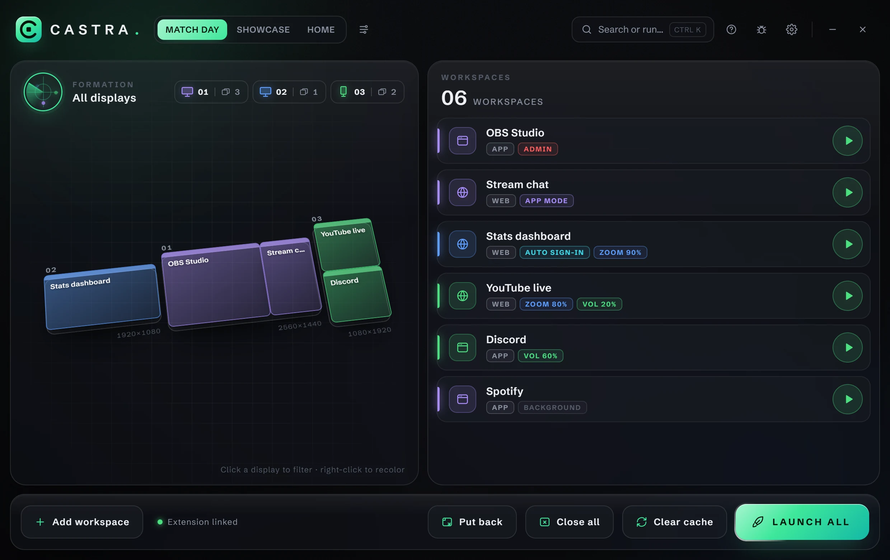
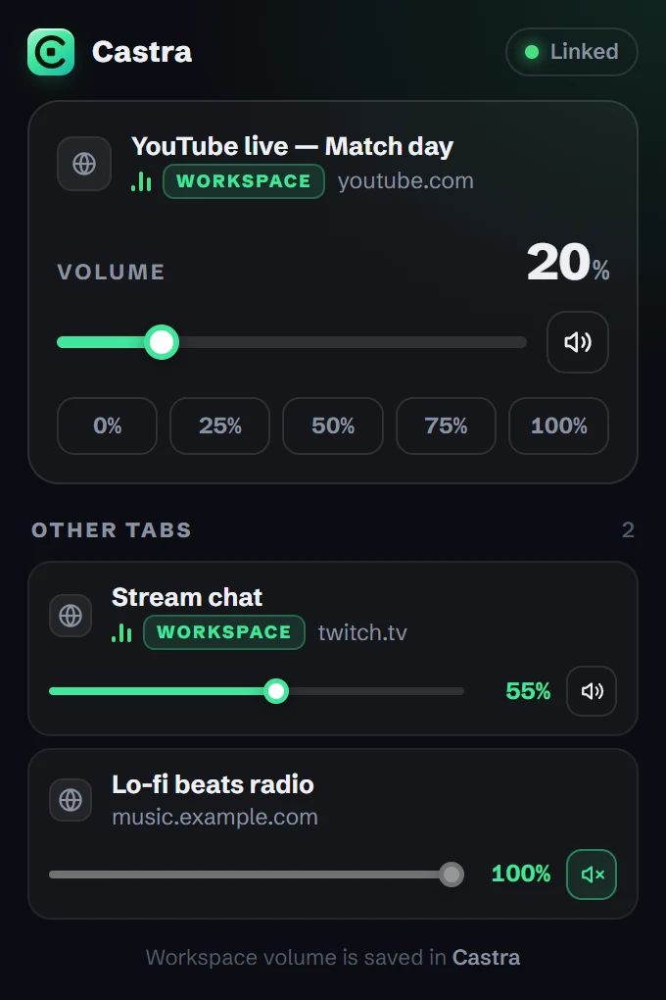

Your whole setup in one window.
Point at any part of the window to see what it is.

The browser, under control.
- A volume mixer for every tab that plays sound.
- Volume on top of the site's own — a player at 50% with Castra at 40% plays at 20%.
- Zoom that sticks, even after a browser restart.
- Auto sign-in for the workspaces where you switch it on.
Works in Chrome, Edge and Brave. Optional — Castra runs without it.
